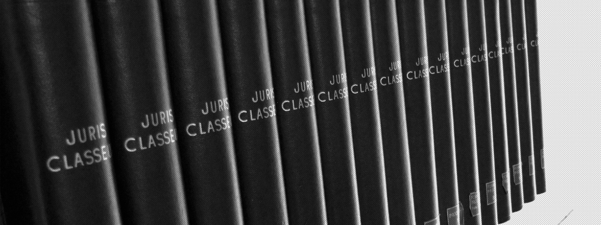
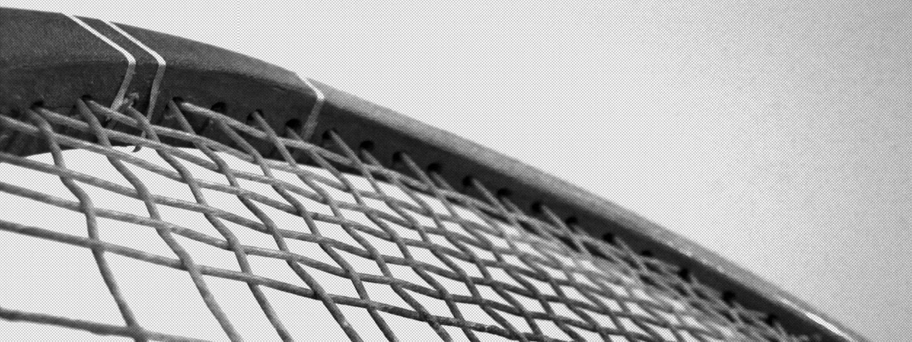

- 

- 
" Avancer entre les lignes..."
LE CABINET_
AVOCATS_
Geoffroy Canivet est avocat au Barreau de Paris depuis 2009. Il est titulaire d’un Master 2 de droit des affaires et de l’économie
de l’UniversitéParis I (Panthéon-Sorbonne) et du diplôme de l’Institut de droit des affaires de l’Université de Paris II (Panthéon-Assas).
Après avoir travaillé en qualité de collaborateur au sein des cabinets Darrois Villey Maillot Brochier et BG2V, principalement en contentieux des affaires et en droit pénal,
il s’est installé pour se consacrer à sa clientèle constituée de moyennes entreprises qu’il assiste dans leurs pratiques commerciales,
en conseil et contentieux.
Il intervient également sur des problématiques de droit de l’immobilier et de droit pénal.
gc@186rivoli.com
Ancien Secrétaire de la Conférence du Barreau de Paris, Matthieu de Vallois est diplômé de l’EM Lyon (cursus Grande Ecole) et
titulaire d’un Master 1 de droit des affaires de l’Université Paris I Panthéon-Sorbonne et d’un Master 2 de droit des affaires de
l’Université Jean-Moulin (Lyon III).
Après avoir travaillé au sein du cabinet Cotty Vivant Marchisio Lauzeral en droit des sociétés et contentieux commercial,
il a rejoint en 2012 la Conférence du Barreau de Paris (www.laconference.net) réunissant chaque année douze avocats
intervenant quotidiennement au Palais de justice de Paris pour assurer les missions de défense pénale d’urgence
confiées par le Bâtonnier de l’Ordre.
Matthieu de Vallois assiste régulièrement ses clients en matière commerciale et en droit des sociétés ainsi qu’à
tous les stades de la procédure pénale, en matière correctionnelle et criminelle, sur des dossiers de droit pénal
général et de droit pénal des
affaires.
mdv@186rivoli.com
COMPÉTENCES_
-
DROIT DES SOCIéTéS
Formalités, organisation des relations sociales, cessions, responsabilité des dirigeants.
-
DROIT COMMERCIAL ET éCONOMIQUE
Recouvrement de créances, contentieux des relations commerciales, droit des pratiques restrictives de concurrence.
-

DROIT DE L'IMMOBILIER
Droit de la construction, droit de la copropriété et contentieux locatif.
-
DROIT PÉNAL
Droit pénal général, droit pénal des affaires, droit de la presse.
-
DROIT CIVIL
Contentieux de la responsabilité, droit du préjudice corporel.
-
DROIT DU TRAVAIL
Relations individuelles.
PARTENAIRES_
Benoît Vidal a prêté serment en 1995. Il est diplômé d’un Magistère D.J.C.E. et d’un D.E.S.S. de juriste
d’affaires de l’Université de Montpellier. Il est également titulaire d’un Certificat de droit européen des affaires
(Université de Strasbourg) et d’un Certificat de droit économique (Université de Montpellier).
Après avoir débuté sa carrière au sein du bureau toulousain de Fidal, Benoît Vidal a créé sa propre
structure dédiée à l’assistance d’une clientèle d’entreprises et de particuliers en droit fiscal. Il a également
développé une pratique reconnue en droit des sociétés.
Il intervient autant en conseil qu’en contentieux.
Installé 186 rue de Rivoli, le cabinet de Benoît Vidal apporte régulièrement un support de compétences et
d’expérience dans ses spécialités et intervient sur les problématiques fiscales des dossiers traités
par Matthieu de Vallois et Geoffroy Canivet.
Afin de faire bénéficier les clients du cabinet d’une expertise
juridique de haut niveau, Matthieu de Vallois et Geoffroy Canivet s’adjoignent régulièrement les services d'un consultant,
spécialisé en droit des sociétés et en droit des contrats, docteur en droit privé et maître de
conférences des universités.
En complément d’un support essentiel sur les dossiers les plus complexes, Matthieu de Vallois et Geoffroy
Canivet bénéficient d’une veille jurisprudentielle et doctrinale permanente,
ainsi que - de manière ponctuelle - d’une formation continue.
CONTACT_
- 186, rue de Rivoli
75001 Paris
Métros Palais Royal (L1 et L7) /
Pyramides (L7 et L14) / Tuileries (L1) -
Tél. + 33 (0)1 83 64 91 12
Fax +33 (0)1 83 64 91 14
contact@186rivoli.com